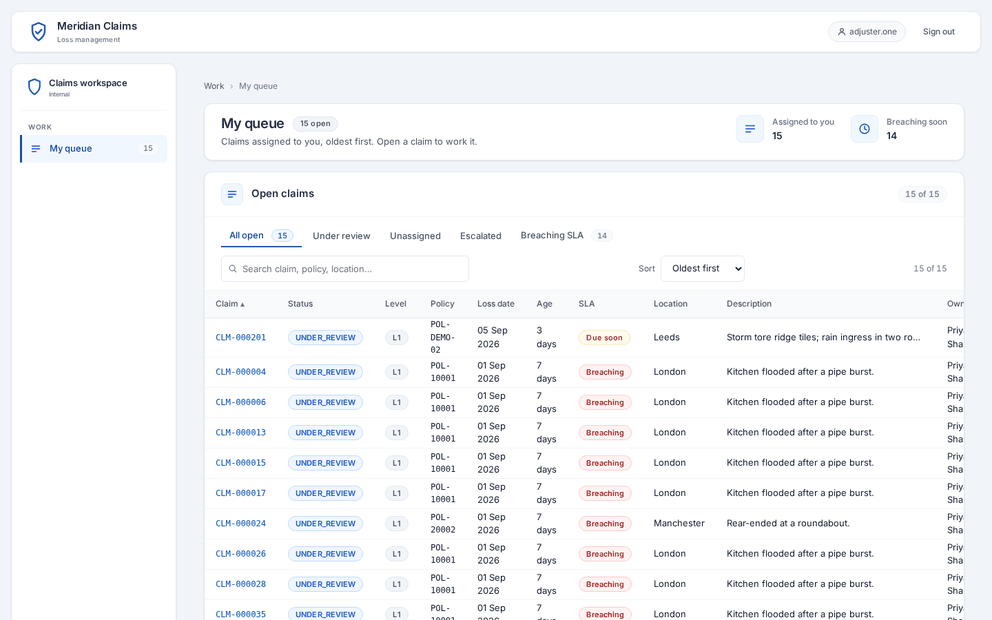
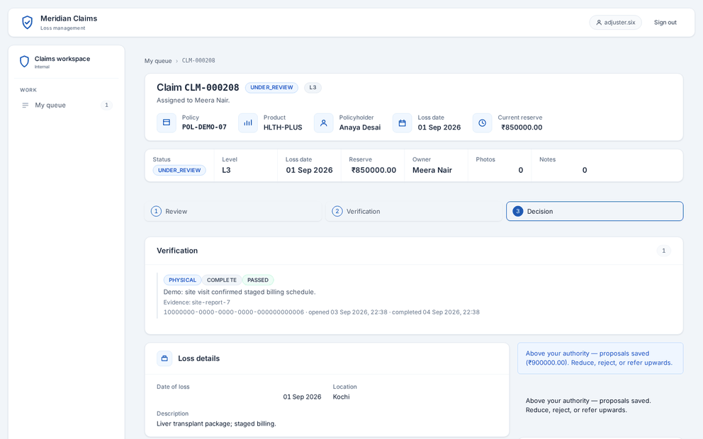
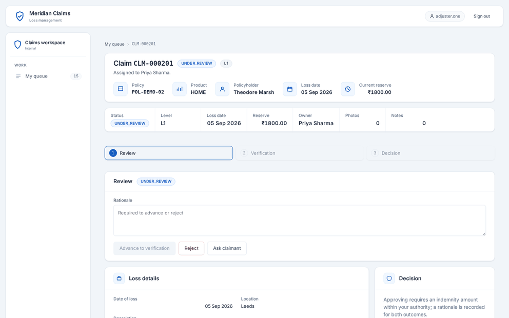
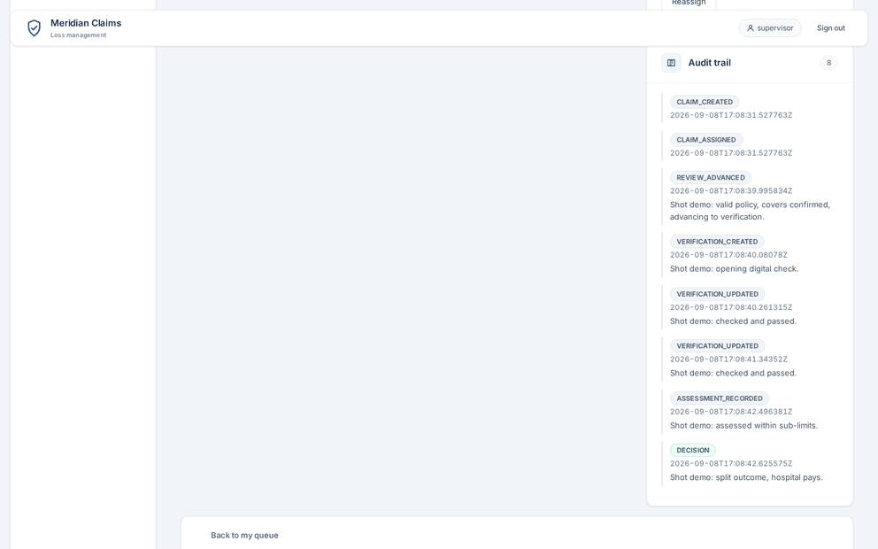
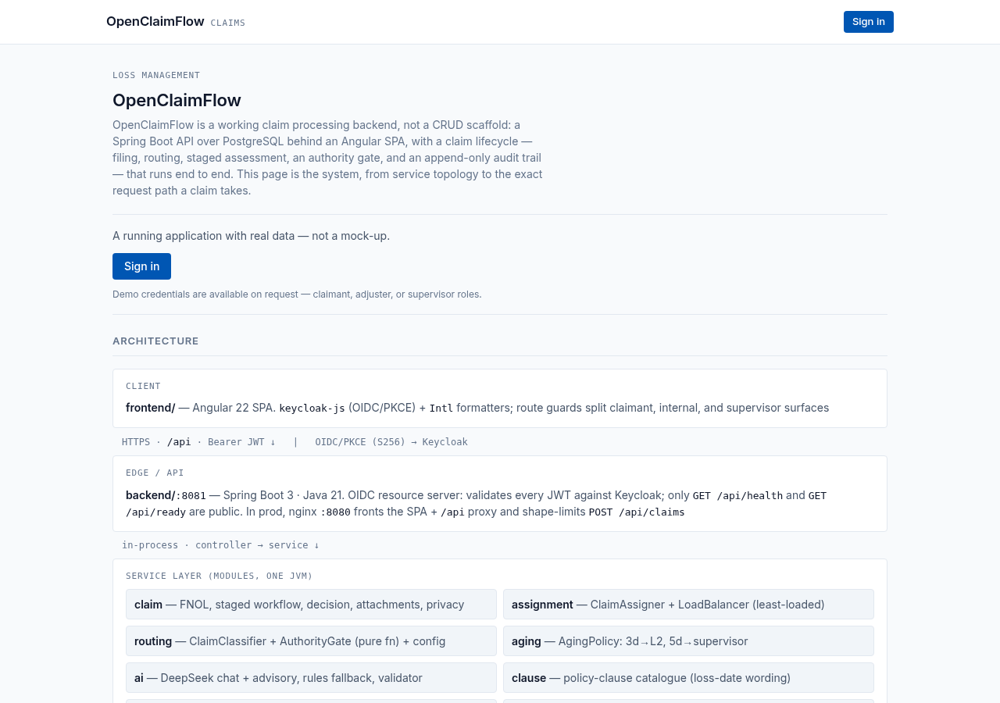
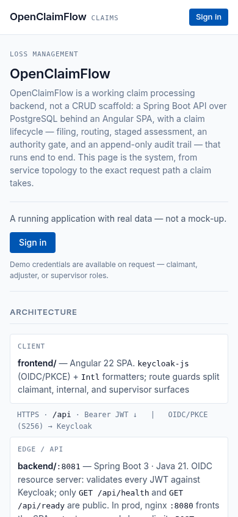
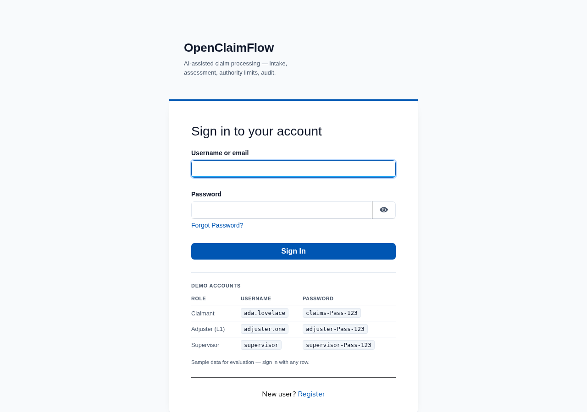
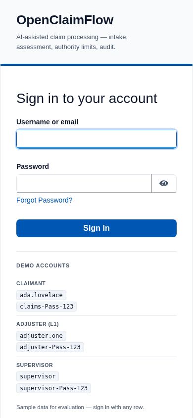

A claimant files a loss online — first notice of loss — the claim auto-routes to the
least-loaded qualified adjuster, adjusters work it through three stages (review, verification,
decision) and supervisors oversee the whole book with authority limits, audit and privacy
controls. Authority, traceability and privacy are modelled in the service rather than left
to the interface: who may approve what, why a claim was paid, and what a claimant must
never see.
In plain terms: Someone makes a claim online; the system routes it to the right handler, keeps a record of every decision, and stops anyone approving more than their limit.
Built and running over a real database with seeded demo data. The repository's README states that all eleven slices are built, so nothing on this page is described as future work.
On a fixed address — self-hosted, so it is up whenever the machine is running. The Keycloak sign-in page displays its own table of demo accounts — a claimant, an adjuster L1 and a supervisor — under a note that it is sample data for evaluation, so nothing else has to be arranged.
Architecture
Deployed topology
Angular 22 SPA --OIDC/PKCE--> Keycloak :8090
realm "claims"
|
`--/api (Bearer JWT)--> Spring Boot :8081
|
+--> PostgreSQL 16
| (claims | claims_e2e)
+--> Mailpit :1025 SMTP / :8025 UI
| (delivered through the outbox)
`--> filesystem storage (S3 seam)
Playwright E2E boots its own backend :8082
+ ng serve, on claims_e2e
Filing a claim, in order
The client posts the claim with a bearer token.
One transaction begins: the request is validated, a rate limit of 20 filings per claimant per day is enforced, and the policy number is normalised.
The policy must exist, the holder name and email must match case-insensitively, and the policy must be active. Otherwise a single closed-world error is returned that does not reveal which check failed.
A classifier picks the routing level from the product code and the configured authority ladder. A claim that cannot be routed is rejected.
Cover selections are validated against the policy's covers. The same policy, loss date and cover set filed twice within 24 hours is a conflict, answered with the original claim number.
A database sequence issues the claim number; the claim is saved unassigned.
A required-document checklist is seeded, and a transaction hook deletes stored photos if the transaction rolls back.
Photos are stored behind a magic-byte check, with a SHA-256 hash and size recorded per attachment.
A filing ledger row is written for the rate limit.
One row per selected cover, with a server-computed claimed total, plus an audit entry.
Assignment happens inside the same transaction: candidate adjusters at that level are locked, open claims counted, and the least-loaded one chosen, with the lowest id breaking ties. A claim is therefore never visible as unassigned, and two concurrent filings cannot double-assign.
Notification and email rows are written in the same transaction; a dispatcher retries delivery with backoff.
A decision, in order. The adjuster's decision takes a row lock, returns not-found to a
non-assignee, compares the version, rejects a claim that is already decided, then consults the
authority gate. An approval closes the claim and records a payment; above the actor's limit it
re-assigns the claim to the least-loaded L2 or escalates it to a supervisor. A denial is never
gated. Audit, notification and email ride the same transaction.
Stack
Angular 22 SPA · keycloak-js · TypeScript · Java 21 · Maven · Spring Boot · Spring Data JPA ·
PostgreSQL 16 · Flyway · Keycloak 26.3 (realm claims, OIDC with PKCE) ·
Mailpit · transactional outbox · filesystem storage with an S3-compatible seam ·
Playwright end-to-end · GitHub Actions, three jobs
Key decisions
Authority gate as a pure function. A decision inside the actor's limit closes the claim and pays; above it the claim is referred upward. Denials are never gated. The gate is called at decision time, so the rule cannot drift between the interface and the server.
Optimistic locking. A version compare-and-swap runs before any other guard, so a stale caller gets a conflict rather than a silent overwrite, and a conflict never masks a validation error.
Not-found instead of forbidden on cross-owner reads. Refusing to confirm that a record exists is the privacy-correct answer.
Claimant visibility wall. The claimant tracker returns workflow steps only. Reserves, internal notes, assignees and coverage never reach claimant surfaces, and this is pinned by tests.
Append-only audit at the data layer. A migration adds a trigger that raises on UPDATE or DELETE, and there is no edit or delete endpoint to reach it. Truncation remains legal on purpose, because the test reset path uses it.
Transactional outbox. Mail rows are written in the same transaction as the state change, so mail is never lost and never sent for a decision that did not happen.
Assignment inside the filing transaction. Row-locked candidates plus a least-loaded pick, so no claim is ever observable as unassigned.
AI without an SDK. Chat and per-cover advisory go over the OpenAI wire format; with no API key configured it degrades to a rules-only path and never fails the request.
Verified metrics
Measured from the source on the default branch
Metric
Value
Spring HTTP handlers
62
Flyway migrations
30 (V1–V30)
Denial codes
7
Realm roles
5
Users in the demo realm
16
Database tables
23
Stored procedures and functions
3
Sequences
1
Playwright spec files
18
The five realm roles are claimant, adjuster L1, adjuster L2, adjuster L3 and supervisor;
Keycloak also writes its own built-in default-roles-claims, which is not an
authored role and is not counted here.
The running product
Captured from the deployed application, signed in as the seeded demo users.

The adjuster's queue. Claims arrive here already routed by level.

The authority gate: a decision above the actor's limit is referred, not applied.

One claim in full — covers, reserves and where it sits in the staged workflow.

The append-only audit trail. There is no edit or delete path to it, and a database trigger enforces that.
Before sign-in

The pre-login landing page. The architecture panel is readable before anyone signs in.

The same page at 390px, with the architecture panel stacked.

The Keycloak sign-in page, showing its own table of demo accounts.

The same sign-in page at 390px, where the account table stacks.
Captured from the running application. The demo-accounts table under the form is shown in the
second pair of captures; the values in it are not reproduced on this page.
The repository also contains a 59-page visual demonstration PDF — 45 screenshots, 11 capability
deep-dives and a system map — at
demo/OpenClaimFlow-Complete-Demo.pdf
(4 MB, so it is a slow open on a phone). There is also a shorter 46-page version in the same folder.
There is no licence file in the repository, so the code is published without a licence grant
and is not open source.